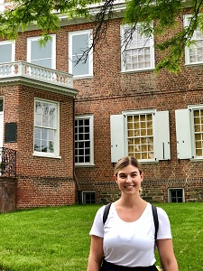

About
A little bit about me.
My story begins in the Los Angeles entertainment industry & continues here with web development. Originally, I focused my career on all things public relations, marketing & communications. I figured since I had earned my degree in Communications, that was the direction I needed to go!
I jumped into my first job at The Walt Disney Company in the Consumer Products division, focusing on PR campaigns for action figures, collectibles, wedding dresses — you name it! It was there that I got my first look into HTML as we used it to publish press materials online.
Following Disney, I transitioned back up to Northern California to be closer to family. I soon found myself at a local regional craft brewery wearing many communications hats. Again, I got a taste of web development as I was tasked with collaborating with a designer & developer to relaunch our website. I LOVED it!
After a couple years at the brewery, I finally decided to take a leap of faith & answer the nagging feeling I had that web development was my calling. I completed courses with Skillcrush & blossomed into the world of HTML, CSS, JavaScript & WordPress. Everything finally clicked. This is the work I'm meant to do!
I now spend my days pouring over code & absorbing myself in development projects. I enjoy splitting my time between San Diego with my boyfriend & Turlock with my family. I fill any freetime with puzzles, sunshine & reading.